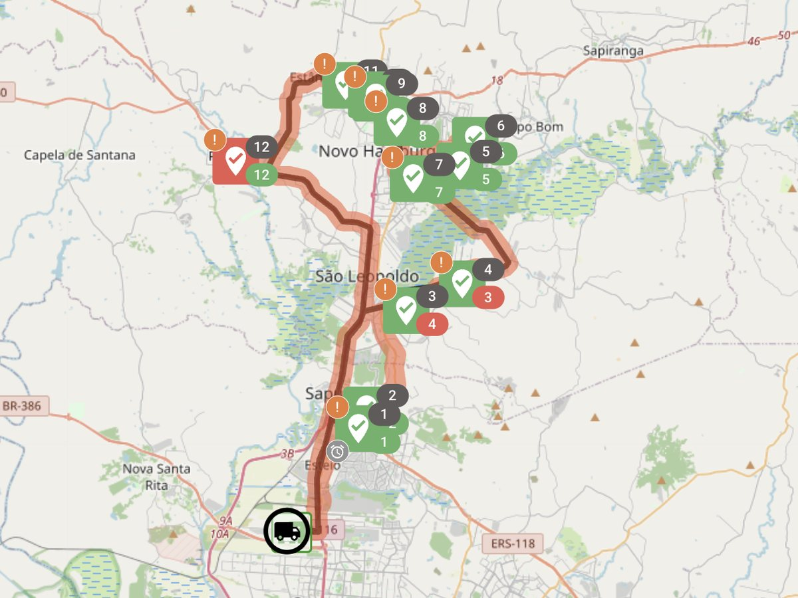

Acompanhe cada entrega, do galpão à porta do cliente.
Visibilidade em tempo real, comprovante digital e menos reentrega. O gestor deixa de depender da palavra do motorista e passa a enxergar a operação inteira.

Saiba onde está cada entrega, agora.
- Status de cada parada atualizado conforme o motorista avança.
- Alertas de atraso para agir antes do cliente reclamar.
- Histórico completo de cada rota para prestação de contas.
Comprovante digital
Foto, assinatura ou código no lugar do canhoto de papel.
Etiquetas QR Code
Identificação e leitura rápida de cada volume.
Recebimento via Pix
Pagamento na entrega, registrado no sistema.
Notificação ao cliente
O destinatário sabe quando a entrega está a caminho.

Cada entrega comprovada, cada problema rastreado.
Com comprovante digital e histórico por rota, a devolução deixa de ser um mistério. Você sabe o que aconteceu, quando e com quem, e transforma isso em dado para melhorar a operação.
Sobre gestão de entregas
O comprovante digital tem validade?
O comprovante digital registra a entrega com foto, assinatura e dados da parada, ficando arquivado para consulta e prestação de contas. Ele substitui o canhoto de papel no controle da operação.
O cliente final é avisado da entrega?
Sim, é possível notificar o destinatário de que a entrega está a caminho, reduzindo tentativas frustradas.
Consigo ver o histórico de uma entrega específica?
Sim. Cada entrega tem histórico completo: horário, status, comprovante e ocorrências.
Coloque suas entregas sob controle.
Agende uma demonstração e veja o rastreamento e o comprovante digital funcionando.
Agendar demonstração